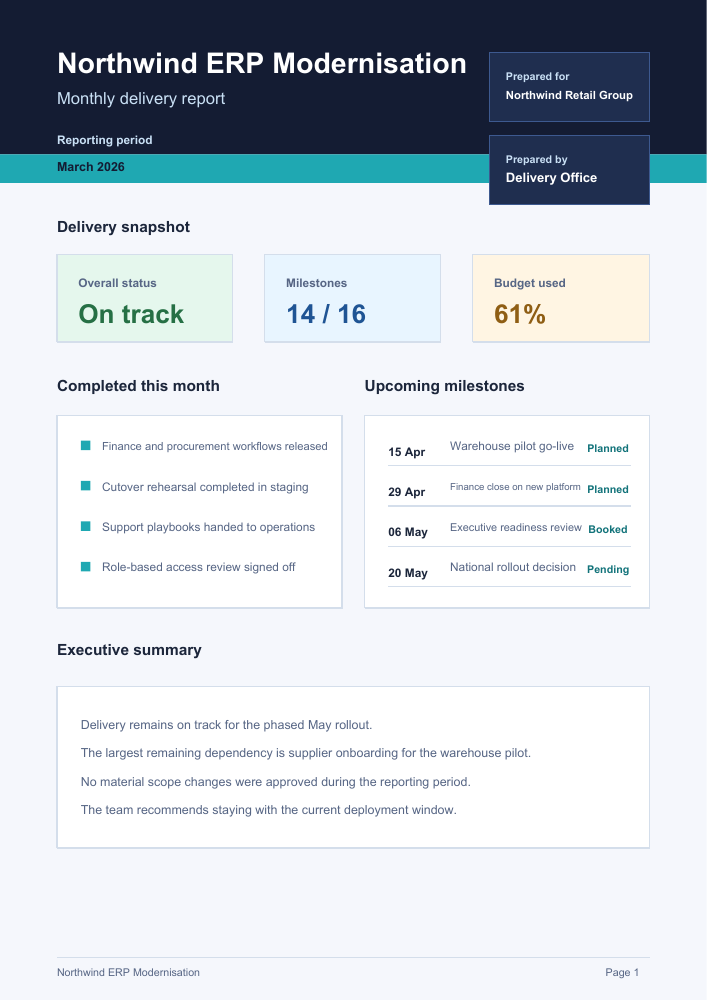

01 / OUTPUT
From API calls to a finished report.

Open the two-page PDF ↗Generated with ZingPDF. View the C# source →
PDF library for .NET 8 and later
Generate reports, fill forms, and extract text.
Free to try. Free for non-commercial use.
Paid plans add commercial use, support, and upgrades.
dotnet add package ZingPDF
Run a complete example →

Open the two-page PDF ↗Generated with ZingPDF. View the C# source →
await Pdf.New()
.Page(page => page
.Size(595, 842)
.Text(text => text
.Value("Monthly delivery report")
.HelveticaBold()
.FontSize(24)
.At(48, 780)))
.SaveToFileAsync("report.pdf");No fixed trial period. Quick start →
No payment for non-commercial work. Free-use terms →
Email support and new releases while subscribed. Compare plans →
Keep paid-term versions within your purchased scope. Commercial terms →
Performance
See the benchmark methodology and the full multi-library comparison.
View performance pageMerge, split, insert, delete, and rotate pages. Update metadata, add watermarks, and save to streams or files.
Author documents with Pdf.New(). Add text, shapes, images, fonts, and layout boxes.
Convert HTML with Chromium, or populate Liquid HTML templates from .NET models before PDF conversion.
Create, fill, and flatten AcroForm fields. Sign PDFs and validate existing signatures.
Read embedded text from PDFs. Add ZingPDF.OCR for scanned and image-based pages.
Apply password protection and redact supported content. Save incrementally or rewrite without earlier revisions.
Runnable examples
Download a complete .NET project, unzip it, and run it locally. Both projects use the published ZingPDF 1.0.59 package.
Create a PDF, add an approval note and a second page, then reopen the result and check its text.
Download runnable project (.zip) ↓These projects target .NET 8. Install the .NET 8 SDK, or a newer SDK with the .NET 8 runtime, then unzip and run in the project folder. The first restore needs internet access. Run the examples on .NET 9 or 10.
dotnet run --project FirstPdf.csprojThe program requires two pages and the original heading, approval note, and checklist heading in extracted text. A failed check exits with an exception.
Read the extracted text. This uses a generated PDF with embedded text; test your own documents before deployment.
Build a report with metric cards, milestones, a risk register, and an executive summary using the fluent C# API.
Open the two-page report ↗ Download runnable project (.zip) ↓These projects target .NET 8. Install the .NET 8 SDK, or a newer SDK with the .NET 8 runtime, then unzip and run in the project folder. The first restore needs internet access. Run the examples on .NET 9 or 10.
dotnet run --project ProjectReport.csprojOpen output/project-status-report.pdf. The published example was checked with an independent PDF reader for two pages and both page headings, and both rendered pages were visually reviewed.
The report uses fictional data, standard PDF fonts, and a fixed layout. Test variable-length content in your own layout before deployment.
Verified on Windows using the published package. Read the verification results →
Questions about compatibility with your PDFs? Email us about your workflow →
Platform support
The packages target net8.0, with .NET 8 as the minimum. Runtime validation covers .NET 8, 9, and 10 on Windows.
Runtime compatibility and native dependencies →
Licensing
Choose developer seats for your team. Every paid plan includes email support and version upgrades while subscribed. Keep using versions released during your paid term indefinitely, within your purchased scope, even after cancellation. Renew for newer releases and support.
Plans not loading? Email us for pricing and purchase help.
Need procurement, invoicing, or more seats? .
FAQ
Yes. Evaluation and other non-commercial use are allowed without a fixed trial period. You only need a paid subscription when commercial use begins.
You can keep using, building, and distributing your application with unmodified ZingPDF versions released during your paid term, within your purchased license scope. Renew to receive newer versions and support.
A paid subscription with sufficient seats allows commercial use of ZingPDF, including bundling the unmodified binaries inside your own application. You can keep using versions released during your paid term after cancelling, within the seats and scope you purchased.
Yes, with paid coverage for the required developer seats. Bundle the unmodified binaries with your
application and retain the supplied licensing assets, terms, copyright notices, and attribution,
including LICENSE.txt. Preserve applicable third-party notices too.
The ZingPDF terms do not require adding a ZingPDF logo to your application or generated PDFs. Retaining the supplied notices is a separate requirement. See the EULA for the full scope.
ZingPDF tolerates malformed content in some parsing paths and recovers from some broken
startxref
cases when a usable xref table is still present. It is not a full PDF repair engine.
ZingPDF keeps the input stream open, parses lazily, and caches objects as they are touched. It does not build a full in-memory document graph up front.
Treat each Pdf instance as not thread-safe. Use one document instance per workflow or
request,
and use separate instances for parallel work.